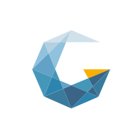
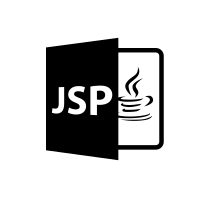
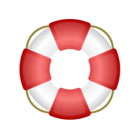
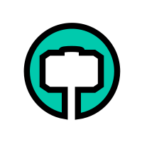
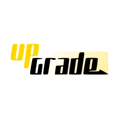
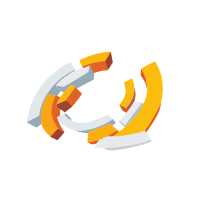

Curriculum
-
2002
Intern
Secretaria do Estado da Saúde de Santa Catarina
Analista de Suporte Técnico
Suporte aos usuários em sistemas, aplicativos, redes e telecomunicações e zelo pelos recursos de hardware e software.
Serviços de backup, formatação de equipamentos, instalação de sistemas operacionais e de softwares e montagem de microcomputadores e redes.
-

2004
Intern
Gennera
Analista de Testes
Identificação das necessidades do negócio e definição dos requisitos, criação de especificações e modelagem dos requisitos.
Teste de software funcional e exploratório, análise de requisitos e criação de casos de testes.
-
2005
Intern
Tribunal Regional Eleitoral de Santa Catarina
Analista de Suporte Técnico
Suporte aos usuários em sistemas, aplicativos, redes e telecomunicações e zelo pelos recursos de hardware e software.
Serviços de backup, formatação de equipamentos, instalação de sistemas operacionais e desoftwares e montagem de microcomputadores e redes.
-

2007
Intern
Marconsoft Sistemas
Analista de Testes
Identificação das necessidades do negócio e definição dos requisitos, criação de especificações e modelagem dos requisitos.
Teste de software funcional e exploratório, análise de requisitos e criação de casos de testes. Uso do framework JUnit no desenvolvimento de software.
-

2008
Autônomo
Florianópolis e Região Metropolitana
Analista de Suporte Técnico de Hardware e Redes
Suporte aos usuários em sistemas, aplicativos, redes e telecomunicações e zelo pelos recursos de hardware e software.
Serviços de backup, formatação de equipamentos, instalação de sistemas operacionais e desoftwares e montagem de microcomputadores e redes.
-

2010
FreeHammer - Consulting & Associates
Consultor
Desenvolvimento e implementação de projetos de consultoria.
-

2012
Cursos Upgrade
Instrutor
Criação e execução de treinamentos on demand e in company.
-

2014
Arenda Sistemas Integrados
Administrador de Sistemas
Planejamento, desenvolvimento e gestão de redes. Gerenciamento do parque tecnológico.
-

2015
Opens Tecnologia
Customer Success Ops
Gestão de sucesso do cliente desenvolvendo métricas de monitoramento baseadas no NPS (Net Promoter Score) e KPI (Key Performance Indicator).
Análise, acompanhamento e monitoramento de todas as etapas de implementação, uso, treinamento e suporte.
-

2016
Grupo Fluxum
Analista de Sistemas
Análise e desenvolvimento de projetos de sistemas, levantamento de requisitos, mapeamento de processos e modelagem de dados.
-

Janeiro 2017
CBPF
Analista de Segurança
Análise e manutenção da segurança da informação, prevenção de ataques internos e externos, redução de vulnerabilidades de sistemas computacionais assim como da infraestrutura de redes.
-

Março 2017
Lituus Sec+
Analista de Segurança
-
2017
Buscando
Desafios